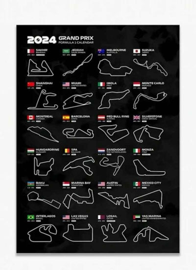

En total, 77 circuitos diferentes han albergado carreras del Campeonato Mundial. El país que más se utiliza para realizar las carreras es en Reino Unido. En total se utilizan 34 países distribuidos a los largo del mundo para correr y que sean reconocidos mundialmente.
| Circuito: | Tipo: | Ubicación: |
| Adelaida | Callejero | Australia |
| Ain-Diab | Autódromo | Marruecos |
| Aintre | Autodromo | Marruecos |
| Albert Park | Autodromo | Gran Bretaña |
| Algarve | Hibrido | Australia |
A lo largo de la historia de Fórmula 1 se han usado diferentes trazados para los circuitos, incluyendo algunos construidos para tal fin, denominados autódromos, como el circuito de Suzuka, y los circuitos callejeros urbanos, como el Circuito de Mónaco. También existen algunos circuitos de trazado semi urbano, conocidos como "híbridos" , en los que se mezclan zonas urbanas con otros sectores restaurados y diseñados especialmente para ser utilizados como pistas de carrera. Algunos circuitos, como el circuito de Baréin hechos por el diseñador de circuitos alemán Hermann Tilke son considerados tilkódromos, incluso si el circuito es híbrido.
La primera temporada inició el 13 de mayo de 1950 en el circuito de Silverstone, una pista creada sobre una antigua base de la Real Fuerza Aérea Británica y donde 26 pilotos se dieron cita para el Gran Premio de Europa, aunque algunos lo nombraron el Gran Premio de la Gran Bretaña.
El Circuito de Pescara era un circuito de carreras de 25,801 km (16,032 mi) compuesto íntegramente por vías públicas cerca de Pescara, Italia, que albergó la carrera automovilística Coppa Acerbo. Pescara es el circuito más largo que jamás haya albergado un Gran Premio de Fórmula Uno. Las carreteras rurales y urbanas utilizadas eran estrechas y llenas de baches.